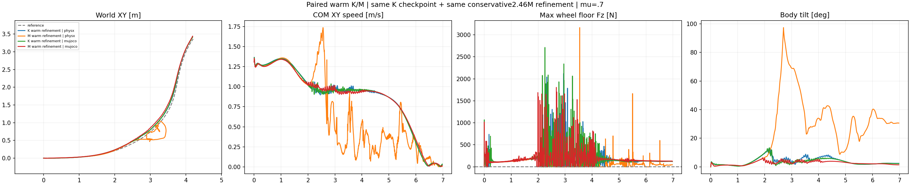

Neither resulting actor passes the complete nominal task across both engines. Stronger M refinement falls in PhysX; its better MuJoCo episode still contains support gaps. No friction sweep follows these failed nominal checks.
| Cell | Core XY RMSE (m) | Speed/reference | Beta RMSE (deg) | Any-wheel support (%) | Max gap (ms) | HF/original | Failed retained gates |
|---|---|---|---|---|---|---|---|
| K warm refinement | physx | 0.0810 | 0.974 | 3.37 | 90.96 | 75.0 | 0.738 | any_wheel_every_physical_sample, longest_no_support_gap, core_HF_reduction |
| M warm refinement | physx | 0.4796 | 0.785 | 70.79 | 74.50 | 935.0 | 0.655 | core_xy_rmse, core_xy_peak, whole_xy_rmse, whole_xy_peak, core_speed_retention, core_reference_beta, any_wheel_every_physical_sample, longest_no_support_gap |
| K warm refinement | mujoco | 0.0847 | 0.973 | 2.76 | 88.66 | 50.0 | 0.795 | any_wheel_every_physical_sample, longest_no_support_gap, core_HF_reduction |
| M warm refinement | mujoco | 0.0992 | 0.969 | 1.90 | 89.20 | 50.0 | 0.677 | any_wheel_every_physical_sample, longest_no_support_gap |
Core: 1.44–4.00 s. Support: 0.02–6.96 s, max wheel ground-normal force strictly above 5 N at each actual 2.5 ms sample. Single-wheel support is allowed. The nine retained checks also cover whole-trajectory XY error. Core/whole XY RMSE must be ≤0.15 m and peak ≤0.30 m; speed ratio 0.95–1.10; intended nonzero beta RMSE ≤10 degrees; core angular-XY 10–100 Hz RMS ≤0.7 of the original same-engine PPO; support 100% and gap zero. No absolute-height or geometric-airborne gate is imposed. Bearing load after falling does not establish recovery.
K_physx. Upright in all four inspected stills. At 3.00 s both wheel forces are zero despite good XY and speed. At 4.00 s support returns; intermittent support and HF gates fail. No complete-task success.
M_physx. Upright at 2.24 s, visibly collapsed with inverted leg posture at 3.00 s (69 degree tilt, 0.238 m root height, speed 0.45 m/s). At 4.00 s wheel load returns but XY error is 1.150 m and speed 0.56 m/s. At 6.96 s the low posture remains and XY error reaches 3.138 m. Load after falling is not recovery; lower HF does not establish a successful turn.
K_mujoco. Upright in the four stills. Both wheel forces vanish at 2.24 s; at 4.00 s only seven of the preceding eight physical samples have any-wheel support. Tracking remains close but support and HF gates fail.
M_mujoco. Upright with low tilt in the four inspected stills and visibly loaded wheels in these selected snapshots. Tracking, beta and HF checks pass, but the full physical trace still contains 50 ms support gaps. Selected loaded snapshots cannot establish continuous support.

Both arms load the identical original K actor, critic and both observation normalizers from checkpoint 8cb011e4c5e2a33a685bc58280df410141ab99aa245892042762b8956595fe5a. Both use fresh Adam moments, fixed learning rate 0.0001 and clip 0.1. Each adds 512×24×200 = 2,457,600 transitions to the original 12,288,000, so each resulting policy has 14,745,600 cumulative transitions. These are warm refinements, not from-scratch or total-budget-matched comparisons to the earlier 12M policies. Smoke transitions are recorded separately.
K retains its contact reward. M changes only the continuous any-wheel load-margin coefficient from 1 to 4; the external contact weight stays +0.4. The other 14 rewards, beta +2, action-rate −0.5, held leg commands, PD 500/10, motor limits, native rigid cylinders, reference, observations and original friction/encoder/COM/push randomization remain unchanged. There is no command ramp or gain change. Validation uses fixed mu 0.7 without DR or observation noise. Each arm uses the same actor in both engines; choosing one actor per evaluation engine would not establish a transferable policy.
The M PhysX trace first records persistent non-wheel ground force at 2.70 s (confirmed at 2.80 s). Its lower high-frequency score accompanies collapse and slowdown. The M MuJoCo episode stays upright in inspected stills, tracks the nonzero beta and meets the HF threshold, but still has 50 ms support gaps. K refinement retains tracking while failing the support and HF checks in both engines. These are single-seed episodes, not robustness qualification or solver-only attribution.
The source/config archives, both native smokes, both full warm refinements, strict CPU policy exports, and all four nominal recordings are retained by hash. Actor/critic/normalizer load identity, cumulative normalization counts and actual physical force histories are verified. Ten CPU tests pass. All 350 video frames decode; numerical metrics and the common fixed camera were independently checked. Stills at 2.24, 3.00, 4.00 and 6.96 s were inspected; full manual playback is not claimed. Rendering uses saved native poses, opaque meshes, a common fixed 2.771 m relative camera and fixed world angles with translation-only following. No pose correction, height edits or contact inference are applied. All owned jobs are terminal.
Full metrics and training proofs · 67 collected evidence hashes · Replay verification · Still review · Terminal process audit · Tests.
Protocol · Trainer · Evaluator · Analyzer · Renderer. Exact remote invocation arguments and existing asset paths remain in the collected launch records. Neural weights, model assets, credentials and native libraries are excluded from the published evidence.